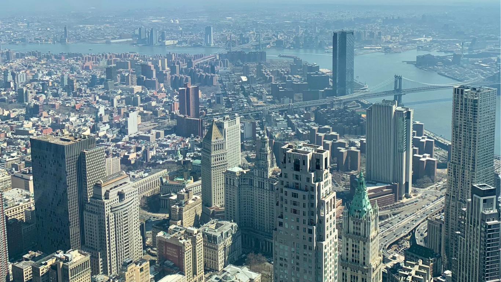
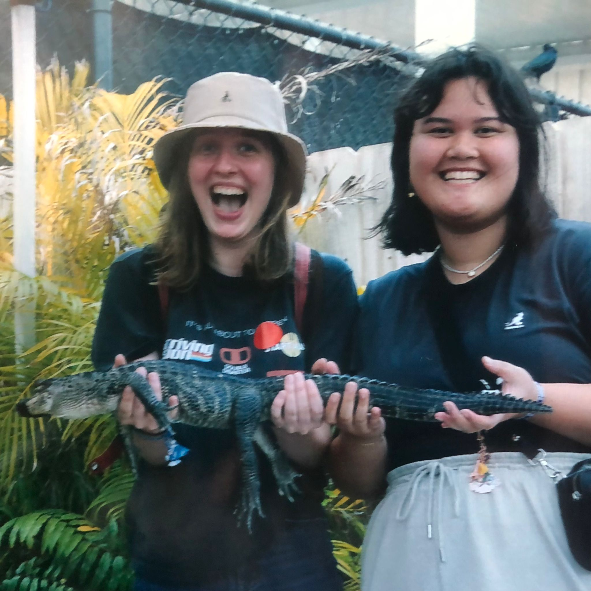

De route voor backpacken in Amerika
New york (11 dagen)
Dag 1: Na aankomst in New York City besloot ik een dagje te rusten om bij te komen van de reis en te acclimatiseren.
Dag 2: Ik bezocht de iconische Brooklyn Bridge en genoot van het adembenemende uitzicht op de skyline van Manhattan.
Dag 3: Ik maakte een rondwandeling door de bruisende straten van New York en terwijl ik genoot van de levendige sfeer, besloot ik een infinity bracelet te laten zetten als herinnering aan mijn reis.
Dag 4: Overdag bracht ik een bezoek aan Times Square, bekend om zijn neonreclames en bruisende energie, en daarna ging ik shoppen in de vele winkels in de omgeving.

Dag 5: Ik bezocht het Vrijheidsbeeld en maakte een mooie boottocht naar het nabijgelegen Staten Island om vanaf het water de skyline van Manhattan te bewonderen.
Dag 6: Ik bezocht het 9/11 Memorial en stond stil bij de tragische gebeurtenissen van die dag, terwijl ik de gedenkplaatsen en het museum verkende.
Dag 7: Ik bracht een ontspannen dag door in Central Park, wandelend door de groene grasvelden, genietend van de natuur.

Dag 8: Ik bezocht de indrukwekkende Grand Central Terminal en verkende de financiële wijk van Wall Street, waar ik de beroemde Charging Bull en de New York Stock Exchange bewonderde.
Dag 9: Ik bezocht het Museum of Moving Image, waar ik leerde over de geschiedenis van de film- en televisie-industrie en interactieve tentoonstellingen verkende.
Dag 10: Ik koos ervoor om te gaan thrift shoppen, waar ik unieke en vintage items vond in de vele boetiekjes en tweedehandswinkels verspreid door de stad.
Dag 11: Ik nam afscheid van New York City en vertrok naar Orlando, waar een nieuw avontuur op me wachtte.
Orlando (8 dagen)
Dag 1: Na aankomst in Orlando heb ik ingecheckt in mijn hotel en heb ik wat rust genomen om bij te komen van de reis.
Dag 2: Ik had een geweldige dag in Universal Studios Island Adventure, waar ik genoot van spannende attracties en de magie van film tot leven zag komen.
Dag 3: Op deze dag heb ik wat tijd doorgebracht in de outlet winkels rondom Orlando, waar ik koopjes vond en lekker heb geshopt.
Dag 4: Terug naar Universal Studios voor nog meer avontuur en plezier in deze geweldige themaparken.
Dag 5: Ik bracht een bezoek aan Disneyworld Epcot, waar ik werd ondergedompeld in verschillende culturen, heerlijk eten en spectaculaire shows.

Dag 6: Een dag vol spanning en attracties in Disneyworld Hollywood Studios, waar ik mijn favoriete Disney-personages ontmoette en genoot van spannende attracties.
Dag 7: Ik besloot een rustigere dag te nemen en ging minigolfen, een leuke activiteit om even te ontspannen en plezier te hebben.
Dag 8: Het was tijd om Orlando achter me te laten en naar Miami te gaan voor het volgende deel van mijn reis.
Miami (6 dagen)
Dag 1: Na aankomst in Miami heb ik ingecheckt in mijn hotel en heb ik wat tijd genomen om uit te rusten en te ontspannen.
Dag 2: Ik genoot van een avontuurlijke dag in de Everglades, waar ik een mooie boottocht maakte en wildlife spotte
Dag 3: Vandaag nam ik deel aan een dagtour naar Key West, waar ik kon genieten van de prachtige stranden, kleurrijke huisjes en het relaxte eilandleven.

Dag 4: Op deze dag bezocht ik het beroemde Miami Beach, waar ik kon ontspannen op het strand, genieten van de levendige sfeer en misschien zelfs een duik kon nemen in de oceaan.
Dag 5: Ik bracht een bezoek aan Bayside Marketplace, een levendige marktplaats met winkels, restaurants en entertainment. Daarnaast heb ik ook de Botanische tuin bezocht om te genieten van de prachtige natuur en planten.
Dag 6: Het was tijd om afscheid te nemen van Miami en mijn avontuur voort te zetten in Costa Rica.
Bekijk hier de reis in Costa Rica